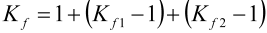

|
|
|


相交切口效应
在轴设计时，应尽可能避免切口效应重叠，例如带过盈配合的轴肩处的切口效应。但如果确实发生重叠，在最坏情况下，应使用 FKM 指南计算总切口效应系数 Kf：

由局部切口效应系数 Kf1 和 Kf2 得出。在 KISSsoft 中，可通过为自由截面的切口效应选择（参见"截面类型"章）来解决此情况（自由截面参见"自由截面（单切口）"章）。
然后可以按如下方式计算总切口效应系数：
- 定义两个具有相同 Y 坐标的截面（例如 A-A 和 B-B）。
- 通过选择切口类型 Kf1（例如轴肩）计算截面 A-A。切口系数直接显示在单元编辑器中（参见"单元编辑器"章）。
- 然后对截面 B-B 重复第 2 步中描述的过程。
- 记录这两个切口各自的切口系数，然后根据上述公式计算切口系数 Kf。
- 现在删除截面 A-A 和 B-B，并添加一个具有相同 Y 坐标的新自由截面 C-C。打开单元编辑器，为切口效应选择。然后输入在步骤 4 中计算的总切口效应系数。
Intersecting notch effects
If at all possible, notch effects, for example in a shoulder with an interference fit, should not be overlapped when the shaft is designed. However, if this does happen, in the worst case scenario, the FKM Guideline should be applied to calculate the overall notch effect coefficient Kf:
from part notch effect coefficients Kf1 and Kf2 . In KISSsoft, this situation can be resolved by selecting for the notch effect (see chapter Cross-section types) of a free cross section (see chapter Free cross section (single notch)).
The overall notch effect coefficient can then be calculated as follows:
- Two cross sections (for example, A-A and B-B) are defined with the same Y-coordinate.
- Cross section A-A is calculated by selecting notch type Kf1 (for example, shoulder). The notch factors are displayed directly in the Elements Editor (see chapter Element Editor).
- The process described in 2. is then repeated for cross section B-B.
- The resulting notch factors for both these notches are noted down, and the notch factors Kf are calculated according to the formula given above.
- Now, both cross sections (A-A and B-B) are deleted, and a new free cross section C-C with the same Y-coordinate is added. Open the Element Editor and select for the notch effect. Then, enter the overall notch effect coefficients calculated in point 4.